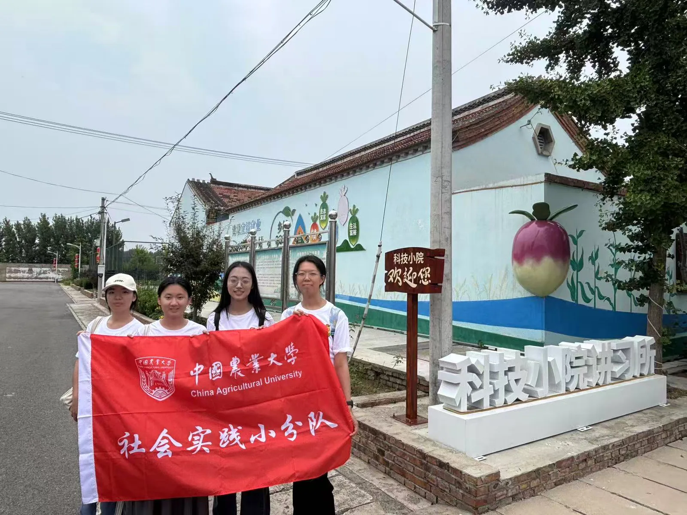
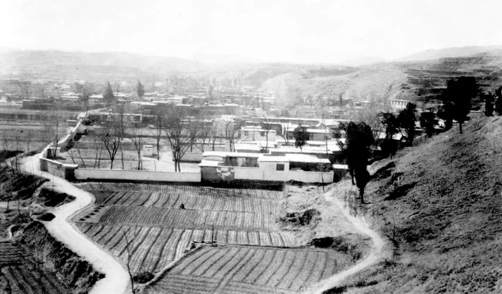
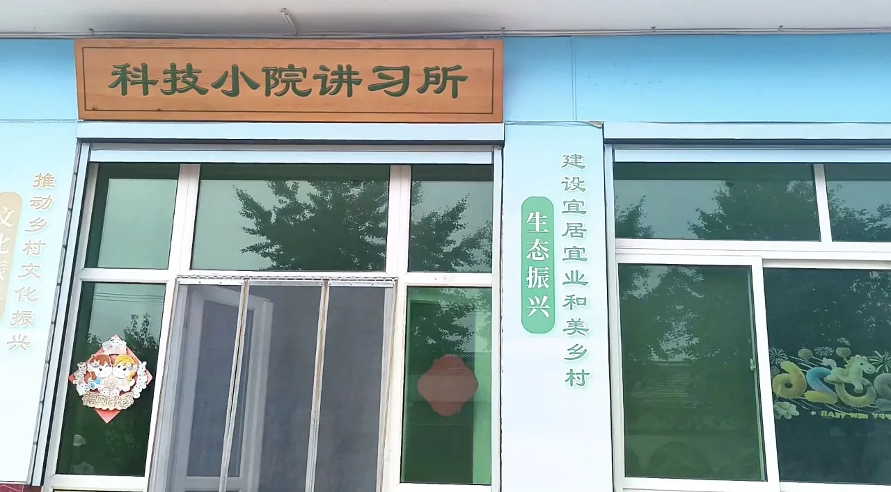
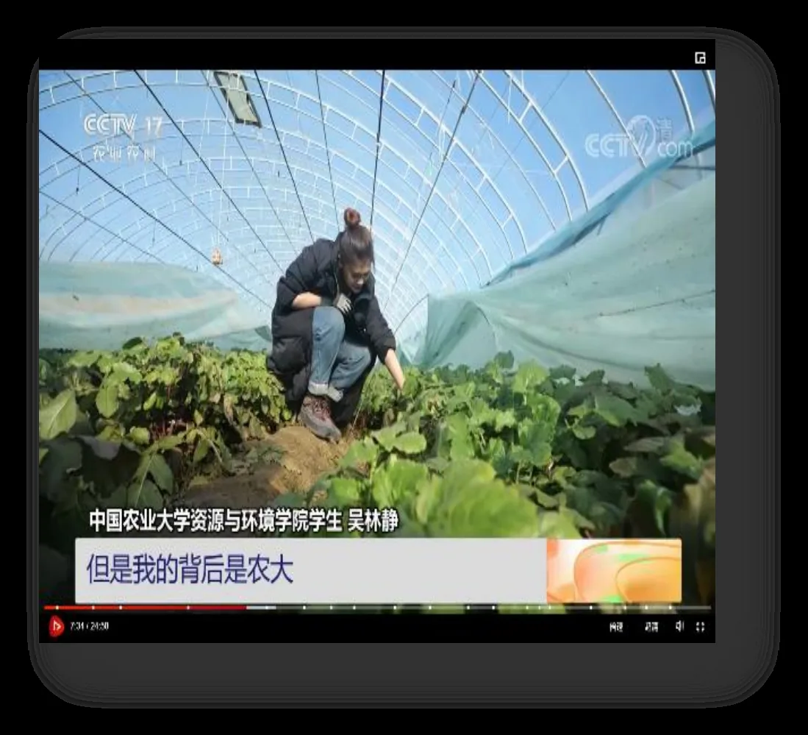
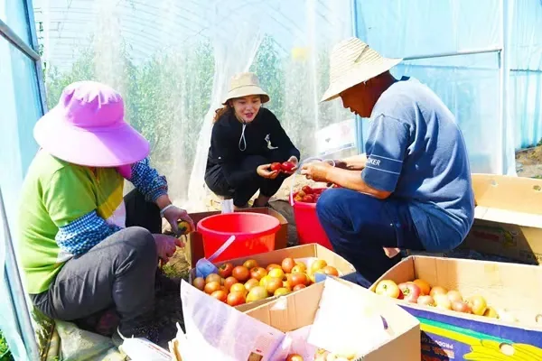
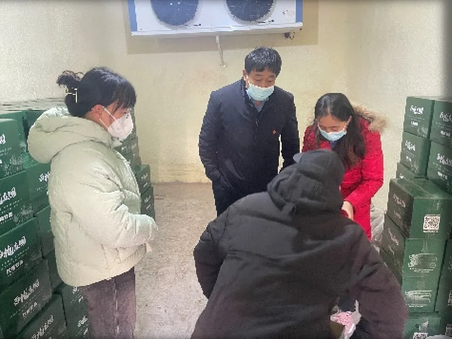
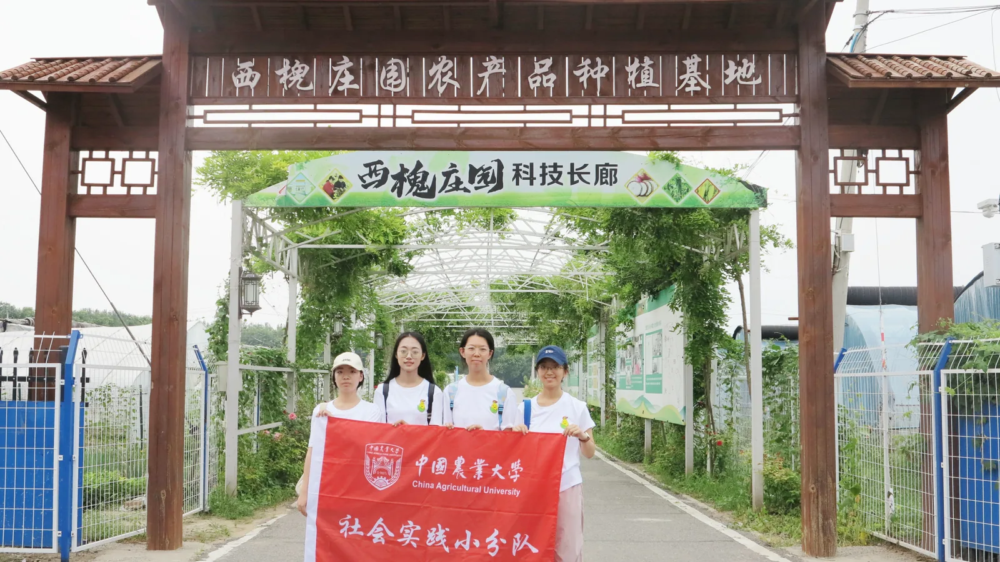

把论文写在大地上
2026年夏天，我们走进北京通州永乐店镇西槐庄村，探访了一个让百年萝卜村焕发新生的“科技小院”。 在这里，我们亲眼见证了知识如何扎根土地，青春如何赋能乡村振兴。

西槐庄，与扎根这里的科技小院
从一个“集体经济薄弱村”，到一个萝卜畅销京城的“明星村”，改变从一座小院开始。
村庄的过去：百年萝卜村，也曾被“困住”
西槐庄村地处京郊，拥有百年萝卜种植历史，村域面积1880亩、辖232户。然而过去很长一段时间，它却是典型的“集体经济薄弱村”：产业单一、以传统萝卜种植为主，土地利用率低，萝卜多为自留种、口感差、销路难，大量耕地撂荒，村集体收入一度仅有 11 万元。
“科技小院”的建成，让这个村庄第一次有了自己的“智囊团”。


科技小院的诞生：“统农049号”
2020年11月11日，在北京市委统战部牵头、联合中国农业大学等多方支持下，西槐庄科技小院正式挂牌成立，编号“统农049号”，采用“高校 + 政府 + 村集体”的协同模式。
研究生们驻扎村庄，把实验室搬到田间地头，以“零距离、零门槛、零时差、零费用”的四零服务扎根一线，与村集体共建“西槐庄园”品牌，探索科技精准扶贫、助力乡村振兴的新路径。
一组数字，读懂巨变
村集体收入从 11 万元增长至 163 万元，增长近 15 倍。
2024年萝卜单品销售额达 110 万元，30亩萝卜卖出18万斤；2025年萝卜销售额更突破 130 万元，全年总销售额突破 163 万元。
累计引进 20余个新品种、10余项新技术，成功打造“西槐庄园”品牌——田园山水美如画，西槐魅力传天下。
走进大棚：科技如何“长出”庄稼
品种、水肥、授粉、防虫……我们把参观学习看到的每一处细节，都记在心里。
水肥一体化
滴灌施肥精准节本，试验平均一种作物一季可节省人工与投入约4500元，让番茄提质增效。
熊蜂授粉
替代人工授粉，坐果更均匀、果实更饱满，是棚室果蔬提质的好帮手。
黄板物理防虫
以物理方式诱捕蚜虫等害虫，明显减少农药使用，让蔬菜更绿色安全。
测土配方施肥
先测土、再配肥，缺什么补什么，肥效更高、土地负担更小。
虫情与环境监测
虫情测报灯、环境监测设备全天候“站岗”，让研究生们对田间动态了如指掌。
特色品种矩阵
冰淇淋萝卜、鲜食玉米、樱桃番茄、网纹甜瓜……20余个新品种相继落地。
“冰淇淋萝卜”是怎么变好吃的？
西槐庄最出圈的明星产品，是那根脆甜冰爽的“冰淇淋萝卜”。它来自团队不断试种选育的水果萝卜新品系，配合鲜食玉米、水果番茄等，撑起了“西槐庄园”的品牌货架。
但好吃不等于好卖——种植中一度出现严重的裂根问题，逼着研究生们走进大棚，开始一场“萝卜保卫战”。
⚠️ 发现的生产难题
大面积种植冰淇淋萝卜时，裂根问题严重：萝卜开裂、卖相受损，商品率一度只有 60%，直接影响销售与口碑。
农户们着急，研究生们更着急——必须找到“治根”的办法。
💡 小院给出的“药方”
- 创新“钾硅配施作基肥、叶面追施钙硼肥”方案，提升萝卜抗寒抗旱与细胞壁强度；
- 试验证明：萝卜裂根率下降13%，产量提高12.2%～22.1%；
- 商品率由 60% 提升至 85% 以上，30亩萝卜卖出18万斤、销售110万元。
青春的田野：我们眼中的一天与一群人
驻院研究生们“自找苦吃”的日常、村民态度的转变，还有我们小队的思考。
驻院研究生的一天
这是我们在小院了解到的一日节奏——忙碌、充实，也让人动容：
进棚指导
趁露水未干，钻进大棚查看苗情，指导农户当天的水肥管理，一棚一棚地走。
整理数据
把测得的土壤、水肥、长势数据录入台账，比对试验组与对照组，为方案优化找依据。
入户回访
挨家挨户回访种植户，解答难题、记录反馈，把“技术”送到炕头田边。
查阅资料
村民白天抛来的新问题，晚上变成书桌上的资料与笔记，常常熬到深夜。



从“学生娃娃能种地？”到“学生师傅”
小院刚来时，有村民嘀咕：“学生娃娃能种地？”——种了半辈子地的老把式，很难信服一群初出茅庐的研究生。
但一季又一季，裂根少了、产量高了、萝卜好卖了，村民的态度也在悄悄转变。如今，种植户们把驻院研究生称作最受欢迎的“学生师傅”，种地前先来“问一句”，成了西槐庄的新习惯。
这让我们真切地明白：科技小院不只是一处试验站，更是一根把技术稳稳“接住”的接力棒。
我们小队的感悟
亲眼看到那根冰淇淋萝卜，我才相信“把论文写在大地上”不是一句口号。知识一旦在土里扎根，就真的能长出金子般的果实。
镜头里最动人的画面，是研究生清晨蹲在垄边查看苗情的样子。他们比我拍过的任何风景都“好看”——因为那是青春最好的样子。
从村民那句“学生娃娃能种地”到一声“学生师傅”，我看到了信任如何被实干一点点挣来。农业技术要落得下、接得住，人才行。
剪辑vlog时我反复看那些素材：黄板、熊蜂、滴灌管、裂根的萝卜和笑起来的村民。科技兴农四个字，第一次有了具体的画面与温度。
“走进乡土中国深处，才深刻理解什么是实事求是、怎么去联系群众。青年人就要‘自找苦吃’。”
——2023年5月1日 · 习近平总书记给中国农业大学科技小院学生的回信未来的种子，正在这片土地发芽
一次实践，一粒种子。我们把见闻装进行囊，也把志向种进心里。
西槐庄样本：可复制的振兴经验
西槐庄科技小院的成功，验证了“高校 + 政府 + 村集体”协同模式的生命力：从治裂根、引品种、做品牌，到建冷库、开直播、办研学，走出了一条可复制、可借鉴的科技兴农之路。
它也把科研与乡土紧紧绑在一起，让农大师生在这里解民生、治学问，让小小的西槐庄成为乡村振兴的生动注脚。

我们的行动与承诺
牢记暑期社会实践“受教育、长才干、作贡献”的主题
读懂乡土
走进田野，真正理解“三农”与国之大者的分量。
练好本领
把课堂知识拿到田间检验，练就服务乡村振兴的真本事。
接续奋斗
立下服务“三农”、贡献青春的志向，未来学成而归、报效乡土。
🙏 致谢
衷心感谢学校与老师们的悉心组织与指导，感谢西槐庄村和村集体的热情接待，感谢西槐庄科技小院的驻院研究生们为我们带来这段宝贵的学习经历。愿我们都能做一粒好的种子，把论文写在大地上。
![希望的田野]()
🎬 实践 Vlog：走进西槐庄科技小院